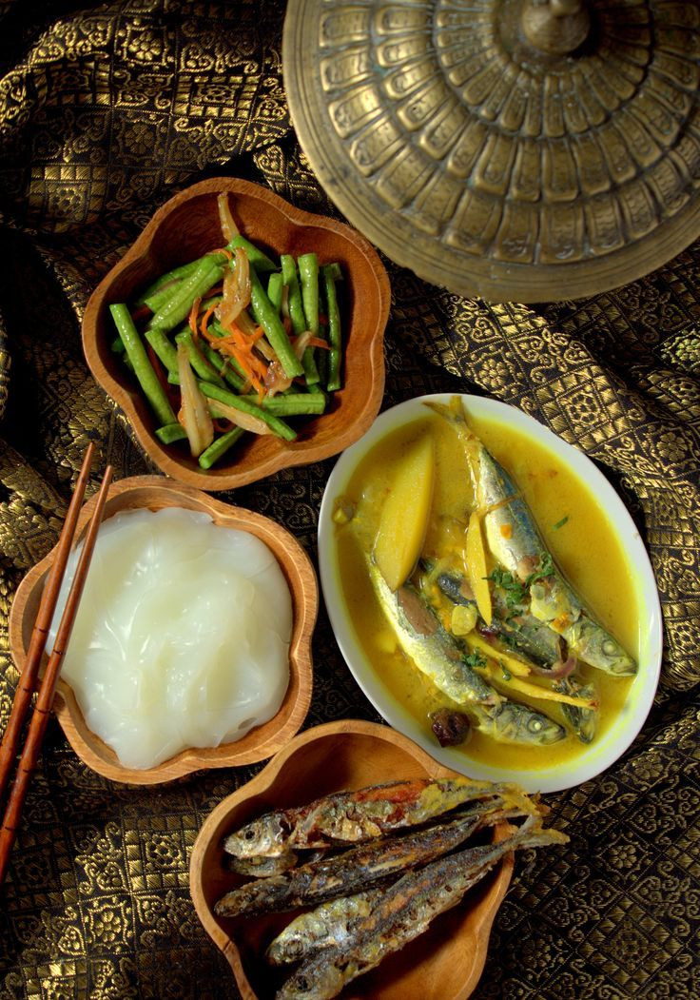
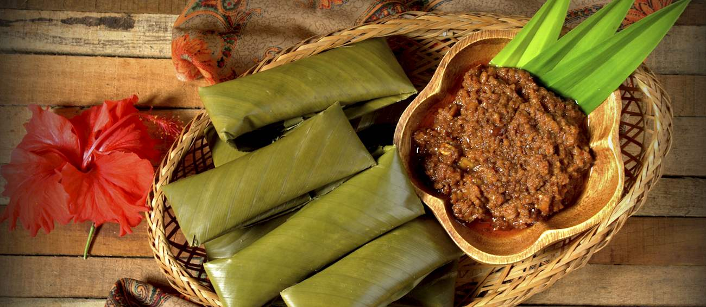
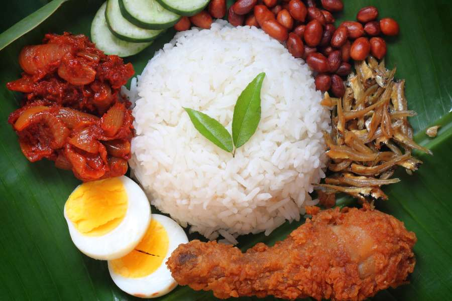
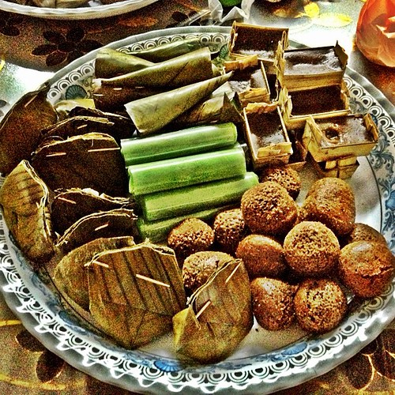
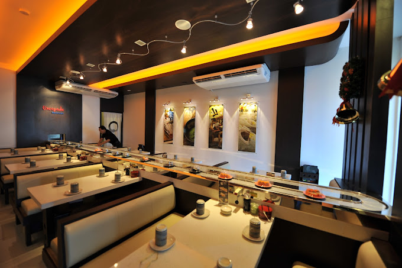
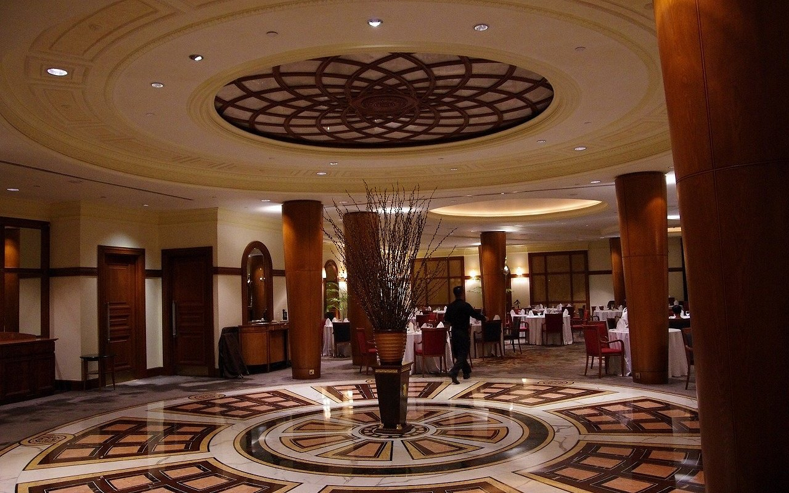

Must-try Local Dishes
CLICK ON CARD FOR MORE DETAILS

Ambuyat

Kelupis

Nasi Katok

Kuih
Where to eat in Brunei
CLICK ON CARD FOR LOCATION

Gadong Night Market
Brunei's most popular evening street food hub, packed with dozens of stalls selling affordable local favorites like grilled chicken wings, satay, nasi katok, grilled seafood, and traditional kuih.

Aminah Arif Restaurant
A well-known local eatery famous for serving authentic Bruneian heritage cuisine, best known as the go-to spot for trying ambuyat alongside traditional dipping sauces (cacah), grilled fish, and local side dishes.

Excapade Japanese Restaurant
Brunei's premier homegrown Japanese restaurant chain, beloved by locals for its extensive menu of fresh sushi rolls, sashimi, bento sets, and teppanyaki across multiple branches nationwide.

Spaghettini Italian Restaurant
An upscale, fine-dining Italian restaurant located inside The Empire Brunei, offering handmade pastas, wood-fired specialties, and classic Mediterranean dishes in an elegant setting.